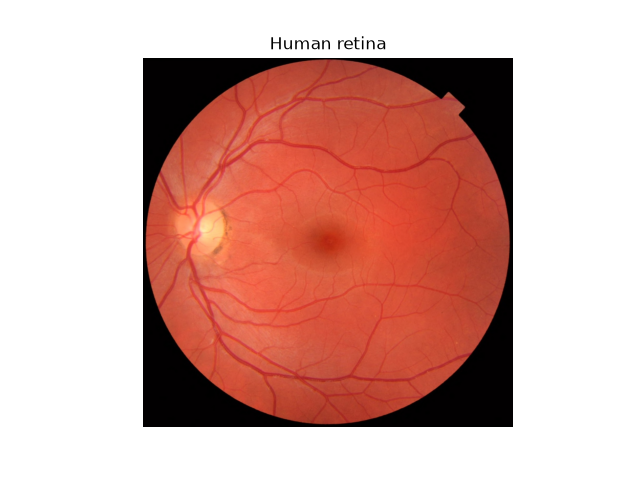
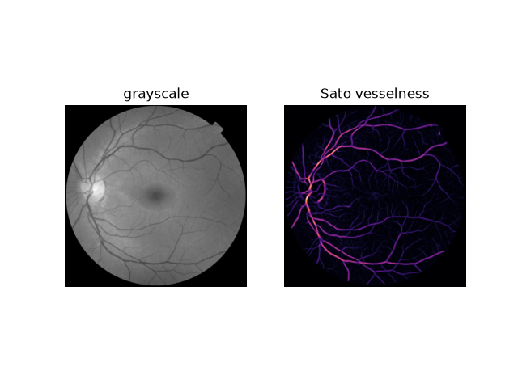
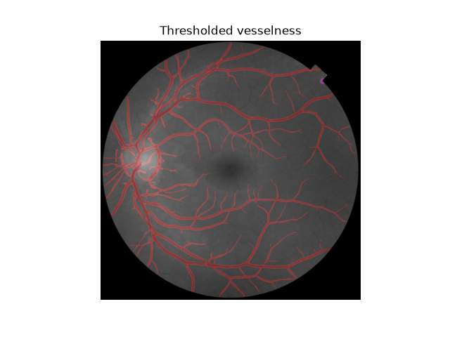
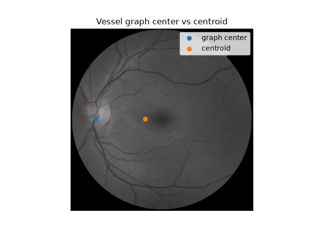

Note
Go to the end to download the full example code or to run this example in your browser via Binder
Use pixel graphs to find an object’s geodesic center#
In various image analysis situations, it is useful to think of the pixels of an image, or of a region of an image, as a network or graph, in which each pixel is connected to its neighbors (with or without diagonals). One such situation is finding the geodesic center of an object, which is the point closest to all other points if you are only allowed to travel on the pixels of the object, rather than in a straight line. This point is the one with maximal closeness centrality [1] in the network.
In this example, we create such a pixel graph of a skeleton and find the central pixel of that skeleton. This demonstrates its utility in contrast with the centroid (also known as the center of mass) which may actually fall outside the object.
References#
import matplotlib.pyplot as plt
import numpy as np
from scipy import ndimage as ndi
from skimage import color, data, filters, graph, measure, morphology
We start by loading the data: an image of a human retina.
retina_source = data.retina()
_, ax = plt.subplots()
ax.imshow(retina_source)
ax.set_axis_off()
_ = ax.set_title('Human retina')

We convert the image to grayscale, then use the
Sato vesselness filter to better distinguish the
main vessels in the image.
retina = color.rgb2gray(retina_source)
t0, t1 = filters.threshold_multiotsu(retina, classes=3)
mask = retina > t0
vessels = filters.sato(retina, sigmas=range(1, 10)) * mask
_, axes = plt.subplots(nrows=1, ncols=2)
axes[0].imshow(retina, cmap='gray')
axes[0].set_axis_off()
axes[0].set_title('grayscale')
axes[1].imshow(vessels, cmap='magma')
axes[1].set_axis_off()
_ = axes[1].set_title('Sato vesselness')

Based on the observed vesselness values, we use
hysteresis thresholding to
define the main vessels.
thresholded = filters.apply_hysteresis_threshold(vessels, 0.01, 0.03)
labeled = ndi.label(thresholded)[0]
_, ax = plt.subplots()
ax.imshow(color.label2rgb(labeled, retina))
ax.set_axis_off()
_ = ax.set_title('thresholded vesselness')

Finally, we can skeletonize this label
image and use that as the basis to find the
central pixel in that skeleton. Compare that
to the position of the centroid!
largest_nonzero_label = np.argmax(np.bincount(labeled[labeled > 0]))
binary = labeled == largest_nonzero_label
skeleton = morphology.skeletonize(binary)
g, nodes = graph.pixel_graph(skeleton, connectivity=2)
px, distances = graph.central_pixel(
g, nodes=nodes, shape=skeleton.shape, partition_size=100
)
centroid = measure.centroid(labeled > 0)
_, ax = plt.subplots()
ax.imshow(color.label2rgb(skeleton, retina))
ax.scatter(px[1], px[0], label='graph center')
ax.scatter(centroid[1], centroid[0], label='centroid')
ax.legend()
ax.set_axis_off()
ax.set_title('vessel graph center vs centroid')
plt.show()

Total running time of the script: (1 minutes 0.049 seconds)